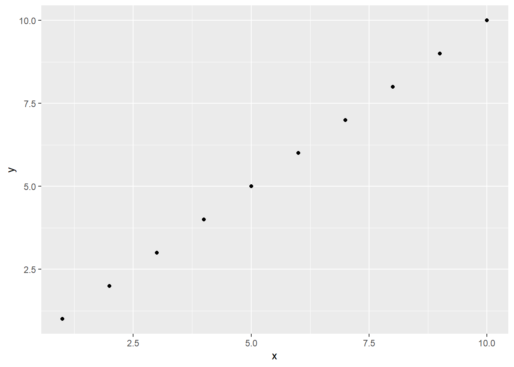

## Choose ONE of the below - if you use both you might delete real data!!
## Drop empty rows
## c(1:2) refers to the row NUMBERS of the blank rows
data <- data |>
dplyr::slice(-c(1:2))
## Keep non-empty rows
data <- data |>
dplyr::slice(3:nrow(data))UG Analysis FAQs
Acknowledgements
This FAQ is co-authored with current Sussex PhD researchers, Hanna Eldarwish and Josh Francis. Their input and insight has been invaluable throughout.
Important
If you are a UG student reading this, do not email Hanna or Josh for help with your dissertation! You should talk to your supervisor in the first instance if you need specific help with your own work.
Many UG dissertation projects at Sussex use Qualtrics, so involve the wrangling and analysis of Qualtrics datasets. The recommended method for dealing with Qualtrics data is using SAV files with the {haven} and {labelled} packages, as described in Tutorials 10 and 11 (see Tutorials). However, this method is not (presently) taught at UG level, as there isn’t space in the curriculum for it, and not all students end up using Qualtrics data. This page compiles some frequently encountered problems and solutions that have come up in previous years.
Data Cleaning
Removing extra rows
When data is read in from CSV, as it often is by students who have been primarily taught using CSV files, Qualtrics adds some extra empty rows to the file to make it easier to view in Excel or similar, but that introduce NAs in R. These rows should be removed.
Solution
Note that Qualtrics CSVs typically have the blank rows inserted as the 1st and 2nd rows in the dataset, which is what the code below assumes. You should check your own dataset carefully to make sure you remove the correct rows.
The function dplyr::slice() takes out a horizontal slice of the data, keeping only particular rows. It’s like dplyr::filter()’s evil twin; they both create a subset of rows, but filter() does this based on the values within the variables (see Tutorial 05), whereas slice() does it using row numbers or position. We can drop the blank rows either by removing those rows, or keeping only the non-empty rows.
Removing previews
As discussed in Tutorial 11, Qualtrics automatically adds a variable to its exported data called “DistributionChannel”. The main values are “preview” and “anonymous”, with “preview” corresponding to preview runs through the study by the researcher(s), and “anonymous” corresponding to genuine responses from participants. Any “preview” data is not real data, and should be removed before analysis.
Solution
Remove preview rows by filtering.
data <- data |>
dplyr::filter(
DistributionChannel == "anonymous"
)Alternatively, create a keep coding variable, as described in Tutorial 06.
Changing variable types
With CSV files especially, it may be the case that variables containing numbers have been read in as character data, and attempting to do e.g. summary statistics may result in strange errors, as below.
numbers <- c("10", "5", "8") # some numbers
class(numbers) # R says the numbers object is character [1] "character"mean(numbers) # throws an informative error that the values aren't in the correct form[1] NASolution
Once the data have been checked to ensure there are no unexpected character values that need to be replaced (e.g. “Twenty” instead of 20), the variables will need to be converted to numeric (or whatever the relevant data type is). This is covered in depth in Tutorial 06 and revised here.
Often students try to change each variable one by one using dplyr::mutate(), which is perfectly reasonable as this is the method they have been taught. However, especially for large datasets, this is not only tedious but also prone to error, such as missing out or misspelling a variable.
data |>
dplyr::mutate(
item_01 = as.numeric(item_01),
item_02 = as.numeric(item_02) # and so on...
)The better option is to use dplyr::across() to convert variables en masse.
# more efficient alternative:
data <- data |>
dplyr::mutate(
dplyr::across(
c(item_01, item_2, item_27), # pick the variables you want to change
as.numeric # coerce them to be numeric vars
)
)
## if your variables are all directly next to each other (like item_01 to item_10), just type in item_01:item_10 instead of c(item_01, item_2, item_27)
Tip
The help documentation for the dplyr::select() function contains a friendly description of the options for efficiently selecting variables by both position and name.
Dealing with NAs
NAs (missing values) will cause different problems depending on the task you are trying to complete. By default, for example, lm() will remove rows with missing data, while other functions like mean() and sd() will return NA if there are any NAs present.
Solution
On the one hand, you can include the na.rm = TRUE argument in functions like mean() and sd() to ignore NAs when doing the calculations.
However, it’s a bit risky to not deal explicitly with NAs. Among other issues, the sample size you would calculate from using a method like nrow(data) will not be the same as the actual sample size that is used in the analysis or calculations. It’s strongly recommend to develop clear rules for dealing with NAs as part of your analysis plan, in discussion with your supervisor, and then implementing those rules consistently to remove or replace NA values so that your final dataset doesn’t make any assumptions about which data to include.
Reformatting for repeated measures
As described in Tutorial 09, repeated measures data must be in long rather than wide format. Before analysis, the dataset must be restructured.
Solution
Restructuring can be straightforward or complex depending on how the information is stored and in which variables. Refer to the example of tidyr::pivot_longer() in Tutorial 09, or run vignette("pivot") in the Console for detailed help.
Troubleshooting Errors
Error: Can’t subset columns that don’t exist
This indicates there is no column (variable) with the name as it has been written.
Solution
The cause is very typically typos in the column name. To avoid this, make use of tab-autocomplete when typing variable names, and keep variable names short, succinct, and consistent.
Error: object/function not found
Similar to the above, this indicates that R has looked in the Environment (in the case of objects) or in the loaded packages (in the case of functions) and has not found the object or function you have tried to use.
## Misspelling the object name
mean(numbrs)Error in eval(expr, envir, enclos): object 'numbrs' not found## Misspelling the function name
mena(numbers)Error in mena(numbers): could not find function "mena"Solution
Again, typos are a common cause, and can be avoided with autocomplete.
For objects, this error may appear when you have written the code that creates an object, but not run it. This could happen if you restart R, or clear your Environment, so objects you have previously created are removed. Find and run the code that creates the object (but beware of running code out of order!).
For functions, this error frequently appears when you are using a function without a package call (e.g. filter() instead of dplyr::filter()) and have not loaded the relevant package.
The solution is to add the package call and/or load the package. If the error persists, you may need to install the package.
Adapting code from {discovr}
It’s completely fine to use code examples from the {discovR} tutorials for analysis purposes. However, some “object not found” or “column doesn’t exist” errors may arise because the object/dataset/variable names from the tutorial example haven’t been replaced.
Solution
Check the code for leftover objects or names from {discovr} and replace with the corresponding objects or names from your dataset.
Error: mapping must be created by aes()
Muscle memory often gets you into trouble in {ggplot2}! Using the pipe |> instead of + to link together layers in a plot will return one of the friendliest errors you’ll see.
library(ggplot2)
data <- tibble::tibble(
x = 1:10,
y = 1:10
)
# this will not work
data |>
ggplot2::ggplot(aes(x = x, y = y)) |>
ggplot2::geom_point()Error in `ggplot2::geom_point()`:
! `mapping` must be created by `aes()`
ℹ Did you use `%>%` or `|>` instead of `+`?Solution
Use + instead.
data |>
ggplot2::ggplot(aes(x = x, y = y)) +
ggplot2::geom_point()
Miscellaneous
Duplicate code
As we saw in the very first tutorial, duplicating code can result in accidentally reversing or overwriting values. This can frequently happen with reverse-coding and mean-centring. For example, if you write code to reverse-code a variable, and then duplicate that code, the values will be reversed again, resulting as the same values as the originals.
## Original values
numbers <- as.numeric(numbers)
numbers[1] 10 5 8## Apply the same transformation to all the numbers
numbers <- 8 - numbers
numbers[1] -2 3 0## Duplicate code - applies the same transformation again
numbers <- 8 - numbers
numbers # same as numbers we originally had [1] 10 5 8Re-running code out of order can have this same effect!
Solution
Always run code in order, once through, for the “final” effect. Check copy/pasted code carefully and only run bits of code out of order if you know exactly what it does and check the results very thoroughly.